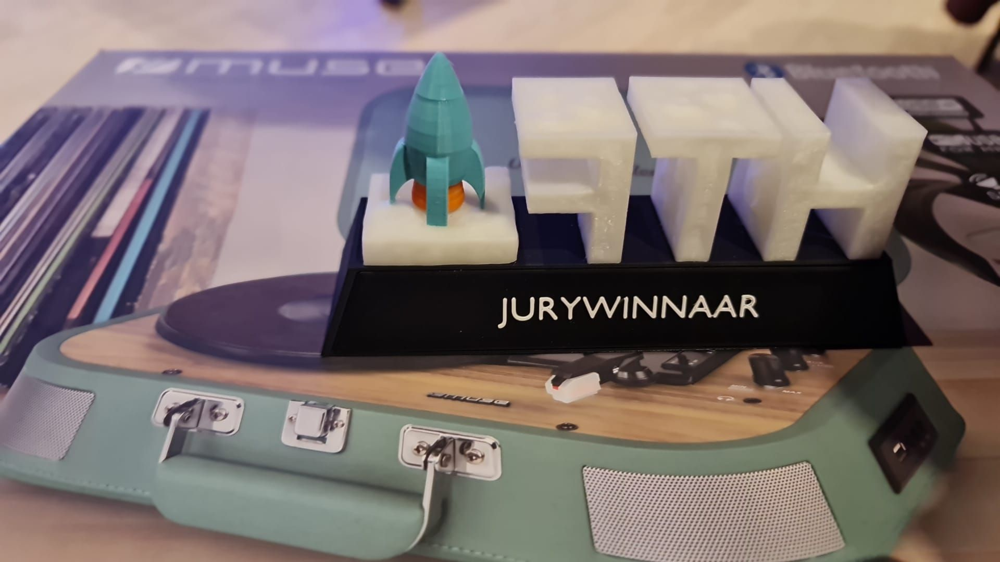
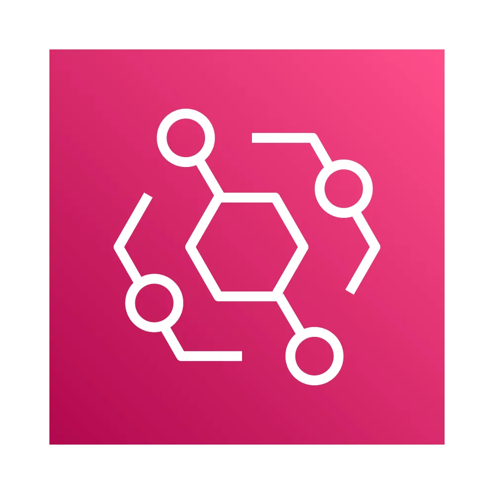
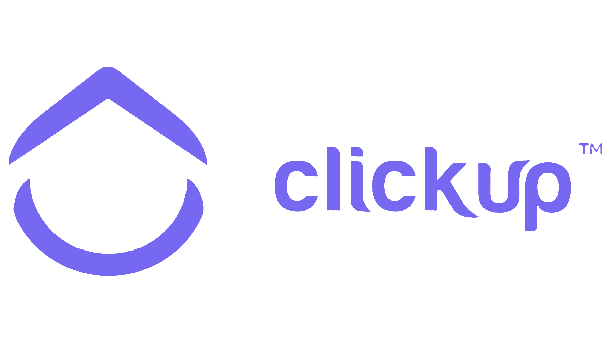
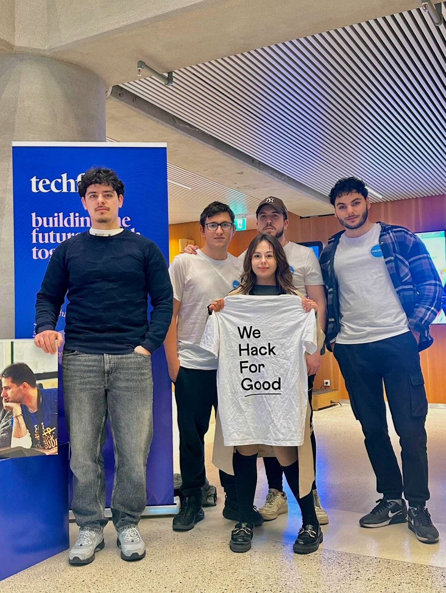
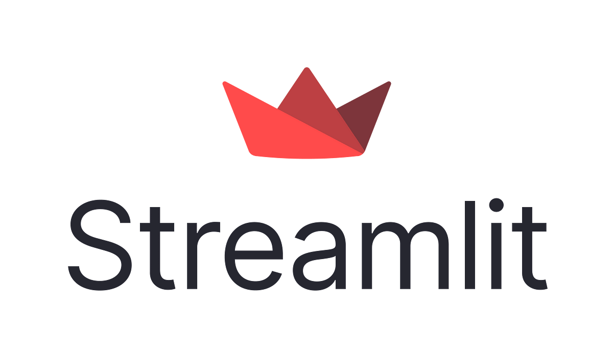

Hackathons

Hack the Future
On November 19, 2024, I teamed up with Quinten Cosemans for Hack the Future in Antwerp. Our five-level challenge simulated a space mission, each step demanding stronger AWS automation and resilience.
We decoded Morse-code events via EventBridge with a Node.js Lambda, queried SpaceX data through GraphQL, and automated NOAA weather data downloads using robust retry logic and S3 storage.
Next, we fetched NASA’s Picture of the Day and delivered it via email service integrations, troubleshooting delivery with multiple providers. In the final stage, we used an AI API to assess weather conditions and auto-create ClickUp tasks labeled for departure readiness.
Despite public S3 buckets revealing our code, we completed all levels first and won a branded music player. This hackathon sharpened my skills in serverless design, error handling, AI integration, and rapid cloud prototyping.





Hack for Good (The Hague)
In the Hack for Good event (Feb 1–2, 2025) in The Hague, our team built a Red Cross chatbot under a tight 48-hour deadline. It supported text, emojis, and images for clear emergency communication. I led backend development and infrastructure management.
We used Angular for the frontend and delivered a polished UI. On the backend, I implemented Streamlit on an AWS EC2 instance and ran LLaMA 2 locally via Ollama to avoid cloud costs, ensuring an open-source stack.
A custom Python script crawled the Red Cross site to create a JSON knowledge base for accurate, source-linked answers (RAG). I then containerized the service in Docker for easy deployment.



AE Hacktopia, Terraforming Tomorrow
On March 1, 2025, our AE Hacktopia “Terraforming Tomorrow” challenge focused on dynamically generating recipes for alien planets. Since some ingredients weren't available locally, we created an algorithm to substitute missing items using environmental datasets.
We implemented the core logic in Python, parsing planetary resource data and mapping ingredients to available alternatives. A REST API served generated recipes on demand.
For the frontend, we built a lightweight JavaScript interface allowing users to search recipes by planet name and view step-by-step instructions.
This hackathon enhanced my skills in data-driven content generation, API development, and building dynamic web interfaces.